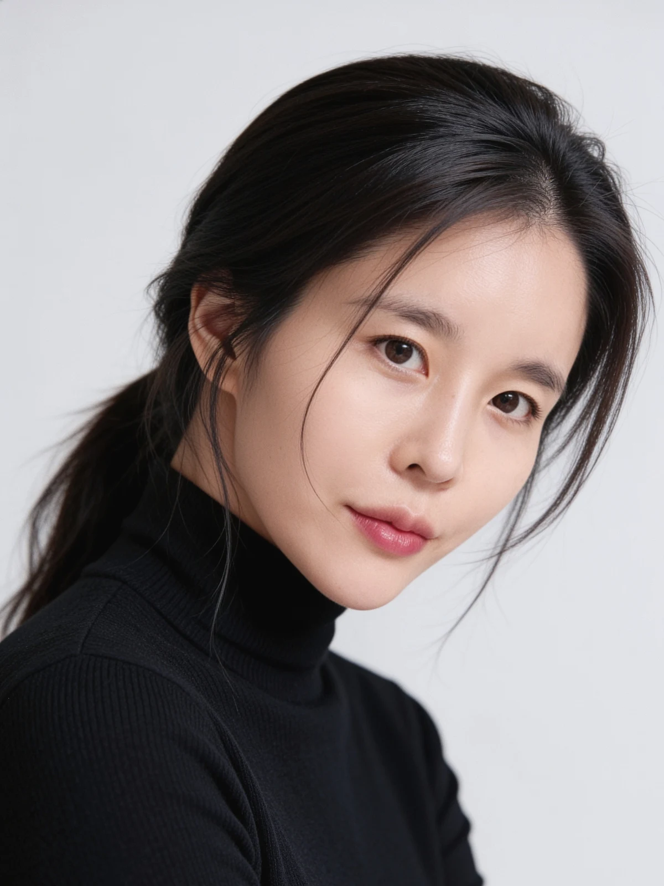
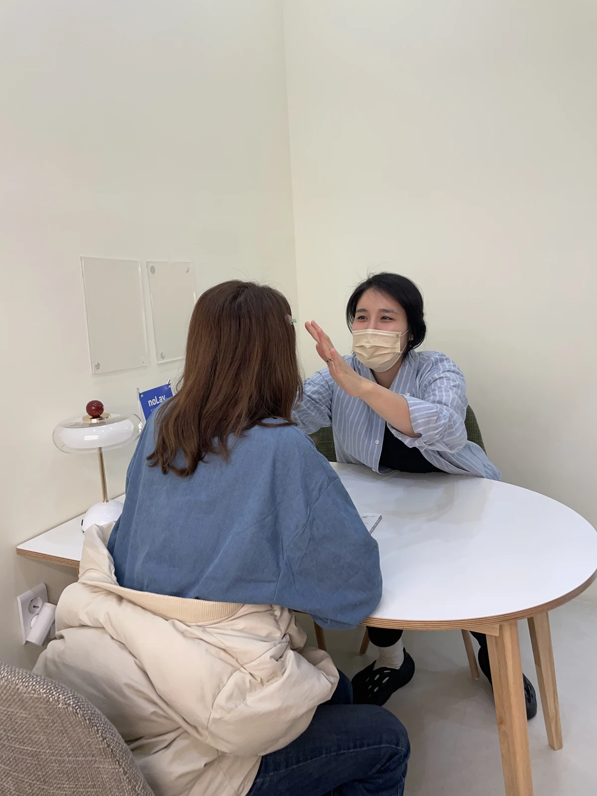
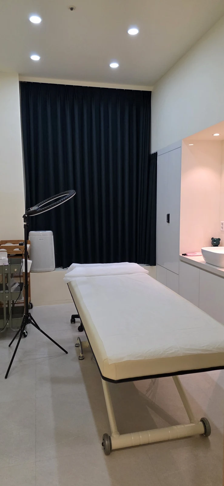

01 / HAIR STROKE
비어 있는 곳에, 결의 흐름을.
눈썹모가 적은 부위를 살펴 헤어스트로크로 결을 표현했습니다. 눈썹 앞머리부터 이어지는 선의 방향을 비교해 보세요.
BONGDAM · BROW DESIGN STUDIO
비어 있는 부분과 남아 있는 잔흔,
원하는 두께와 진하기까지.
현재 상태를 살펴 디자인과 기법을 함께 정합니다.
01 — REAL WORK
서로 다른 출발점에서 찾은 방향.
사진을 누르면 전체 크기로 볼 수 있습니다.
눈썹모가 적은 부위를 살펴 헤어스트로크로 결을 표현했습니다. 눈썹 앞머리부터 이어지는 선의 방향을 비교해 보세요.
기존 잔흔의 색과 범위를 살펴 셰딩으로 음영을 더한 사례입니다. 전후 사진에서 눈썹의 색 표현과 형태를 확인해 보세요.
제공된 전후 자료입니다. 촬영 시점은 확인되지 않아 시술 직후·회복 후로 구분하지 않습니다.
피부와 기존 눈썹, 잔흔에 따라 가능한 표현과 결과는 달라집니다.
02 — YOUR STARTING POINT
기법 이름을 미리 고르지 않으셔도 됩니다.
지금 불편한 점부터 들려주세요.
비어 있는 범위와 기존 결의 방향을 먼저 확인합니다.
현재 눈썹의 장점과 정돈하고 싶은 부분을 구분합니다.
색·진하기·범위와 새로운 결을 표현할 수 있는 여지를 살핍니다.
03 — THE METHOD
결을 더하는 방식과 음영을 더하는 방식.
어느 하나를 모두에게 권하지 않습니다.
머신을 사용해 눈썹 결을 표현하는 방식입니다.
수작업으로 눈썹 결을 표현하는 방식입니다.
눈썹 사이에 음영을 더해 화장한 듯한 표현을 만드는 방식입니다.
기존 눈썹과 피부 상태, 잔흔, 원하는 진하기를 확인한 뒤
가능한 방향과 고려할 점을 설명합니다.

04 — DIRECTOR'S NOTE
엔지니어로 일하며 작은 차이가 전체의 인상을 바꾼다는 것을 배웠습니다. 그 관찰의 태도로 눈썹 한 올의 방향과 작은 균형 차이를 살핍니다.
평소 눈썹을 어떻게 그리고 지내시는지, 어떤 두께와 표현을 편하게 느끼시는지 묻습니다. 제가 원하는 모양만으로 결정하지 않고, 진행 중에도 의견을 확인해 생각하는 결과의 차이를 줄여갑니다.
시술 당일의 마무리부터 관리와 리터치 설명까지.
모두 작업의 일부로 생각합니다.
작은 차이를 살피되,
완성의 기준은 고객님과 함께 정합니다.
05 — THE PROCESS

카카오톡으로 현재 눈썹과 고민, 방문 희망 일정을 알려주세요.
기존 시술 이력과 눈썹·피부 상태를 살핍니다.
얼굴형과 기존 결의 흐름, 원하는 두께와 진하기를 상담합니다. 적용할 기법과 디자인을 설명하고 의견을 확인합니다.
함께 확인한 방향을 바탕으로 진행하며 불편함과 피부 반응을 확인합니다.
관리 방법과 경과를 안내하고, 약 4~8주 사이 피부 회복과 착색 상태를 확인해 리터치를 진행합니다.
06 — PRICE & BOOKING
현재 이벤트 가격
네이버 후기 작성 필수
HAIR STROKE
리터치 1회 포함
250,000원
EMBOSSING
120,000원
BROW DESIGN · 별도 메뉴
20,000원
셰딩은 눈썹 상태를 확인한 뒤 비용을 안내합니다. 디자인 정리의 포함 범위와 엠보·셰딩 리터치 조건은 예약 전 문의해주세요.
결제수단·부가세 포함 여부, 예약금과 변경·취소·환불 기준은 예약을 확정하기 전에 확인해주세요. 소요시간은 메뉴와 눈썹 상태에 따라 안내합니다.
07 — QUESTIONS
네. 현재 눈썹과 잔흔, 피부 상태, 선호하는 표현을 확인한 뒤 선택할 수 있습니다. 평소 불편했던 점부터 말씀해주세요.
결을 표현한 실제 사례가 있습니다. 다만 피부와 기존 모 상태에 따라 가능한 표현은 달라지므로 현재 사진으로 먼저 상담해주세요.
색·진하기·범위에 따라 방법과 가능 여부가 달라집니다. 진한 잔흔은 헤어스트로크만으로 원하는 표현이 어려울 수 있어 상태를 먼저 확인합니다.
개인 피부 민감도와 컨디션에 따라 다릅니다. 진행 중 불편함과 피부 반응을 확인합니다. 걱정되는 부분은 상담 때 알려주세요.
첫 시술 후 약 4~8주 사이에 피부 회복과 착색 상태를 확인해 진행합니다. 헤어스트로크 가격에는 리터치 1회가 포함됩니다. 다른 메뉴의 포함 여부는 별도 문의해주세요.
월·수·목·금 17:30~22:00, 화·토·일 09:00~22:00에 예약이 가능합니다. 방문 희망 일정을 먼저 문의해주세요. 22:00가 마지막 시술 시작 시간을 뜻하지는 않습니다.
08 — THE STUDIO
상담에서 마무리까지,
고객을 맞이하는 준비도 놓치지 않습니다.

방문 전 희망 일정을 문의해주세요.
건물 내 주차가 가능합니다. 주차 공간이 협소할 수 있어 방문 전 주차 안내 확인을 권장합니다.
English & 日本語 상담 가능